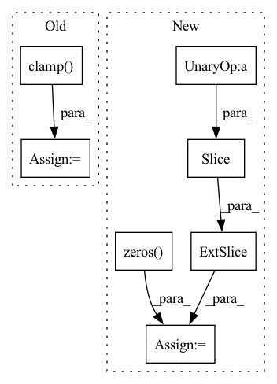

Pattern ID :15240

Before Change
vals_all = []
for offset in offsets:
k_offset = k + offset
k_offset = torch.clamp(k_offset, min=0, max=heatmaps.shape[2] - 1)
for offset_2 in offsets:
l_offset = l + offset_2
l_offset = torch.clamp(l_offset, min=0, max=heatmaps.shape[3] - 1)
vals = (
After Change
) -> TensorType["batch", "num_keypoints"]:
Evaluate 4D heatmaps using a 3D location tensor (last dim is x, y coords).
num_pad = 3
heatmaps_padded = torch.zeros(heatmaps.shape[0], heatmaps.shape[1], heatmaps.shape[2] + num_pad*2, heatmaps.shape[3] + num_pad*2)
heatmaps_padded[:,:, num_pad:-num_pad, num_pad:-num_pad] = heatmaps
i = torch.arange(heatmaps_padded.shape[0]).reshape(-1, 1, 1, 1)
j = torch.arange(heatmaps_padded.shape[1]).reshape(1, -1, 1, 1)
k = locs[:, :, None, 1, None].type(torch.int64) + num_pad
l = locs[:, :, 0, None, None].type(torch.int64) + num_pad
In pattern: SUPERPATTERN
Frequency: 3
Non-data size: 7
Instances
Fragment ID: 51431472
Project Name: danbider/lightning-pose
Commit Name: e97324b9a017aacba50492fd4eb58af7bd9ae167
Time: 2022-07-25
Author: colehurwitz@gmail.com
File Name: lightning_pose/data/utils.py
M Class Name: AnonimousClass
N Class Name: AnonimousClass
M Method Name: evaluate_heatmaps_at_location(3)
N Method Name: evaluate_heatmaps_at_location(3)
M Parent Class:
N Parent Class:
M File Name: lightning_pose/data/utils.py
N File Name: lightning_pose/data/utils.py
M Start Line: 309
M End Line: 323
N Start Line: 309
N End Line: 324
'>
Before Change
vals_all = []
for offset in offsets:
k_offset = k + offset
k_offset = torch.clamp(k_offset, min=0, max=heatmaps.shape[2] - 1)
for offset_2 in offsets:
l_offset = l + offset_2
l_offset = torch.clamp(l_offset, min=0, max=heatmaps.shape[3] - 1)
vals = (
After Change
) -> TensorType["batch", "num_keypoints"]:
Evaluate 4D heatmaps using a 3D location tensor (last dim is x, y coords).
num_pad = 3
heatmaps_padded = torch.zeros(heatmaps.shape[0], heatmaps.shape[1], heatmaps.shape[2] + num_pad*2, heatmaps.shape[3] + num_pad*2)
heatmaps_padded[:,:, num_pad:-num_pad, num_pad:-num_pad] = heatmaps
i = torch.arange(heatmaps_padded.shape[0]).reshape(-1, 1, 1, 1)
j = torch.arange(heatmaps_padded.shape[1]).reshape(1, -1, 1, 1)
k = locs[:, :, None, 1, None].type(torch.int64) + num_pad
l = locs[:, :, 0, None, None].type(torch.int64) + num_pad
'>
Fragment ID: 51431474
Project Name: danbider/lightning-pose
Commit Name: 899341b8c2f42202457fc431488028789323befa
Time: 2022-07-25
Author: colehurwitz@gmail.com
File Name: lightning_pose/data/utils.py
M Class Name: AnonimousClass
N Class Name: AnonimousClass
M Method Name: evaluate_heatmaps_at_location(3)
N Method Name: evaluate_heatmaps_at_location(3)
M Parent Class:
N Parent Class:
M File Name: lightning_pose/data/utils.py
N File Name: lightning_pose/data/utils.py
M Start Line: 309
M End Line: 323
N Start Line: 309
N End Line: 324
'>
Before Change
self.state = self.state + total_input * (1-self.alpha_mem)
// Clip membrane potential that is too low
if self.threshold_low: self.state = torch.clamp(self.state, min=self.threshold_low)
self.tw = time_steps
self.spikes_number = output_spikes.abs().sum()
return output_spikes
After Change
batch_size, n_time_steps, *other_dimensions = input_current.shape
rec_out = torch.zeros((batch_size, 1, *other_dimensions))
output_spikes = torch.zeros_like(input_current)
for step in range(n_time_steps):
total_input = input_current[:, step:step+1] + rec_out
// compute output spikes
output = self.lif(total_input)
'>
Fragment ID: 51431491
Project Name: synsense/sinabs
Commit Name: 8c263985e90ff782f31e98955f40fad6e906fdb7
Time: 2021-11-02
Author: gregor.lenz@synsense.ai
File Name: sinabs/layers/lif.py
M Class Name: LIFRecurrent
N Class Name: LIFRecurrent
M Method Name: forward(2)
N Method Name: forward(2)
M Parent Class: torch.nn.Module
N Parent Class: LIF
M File Name: sinabs/layers/lif.py
N File Name: sinabs/layers/lif.py
M Start Line: 165
M End Line: 192
N Start Line: 164
N End Line: 176